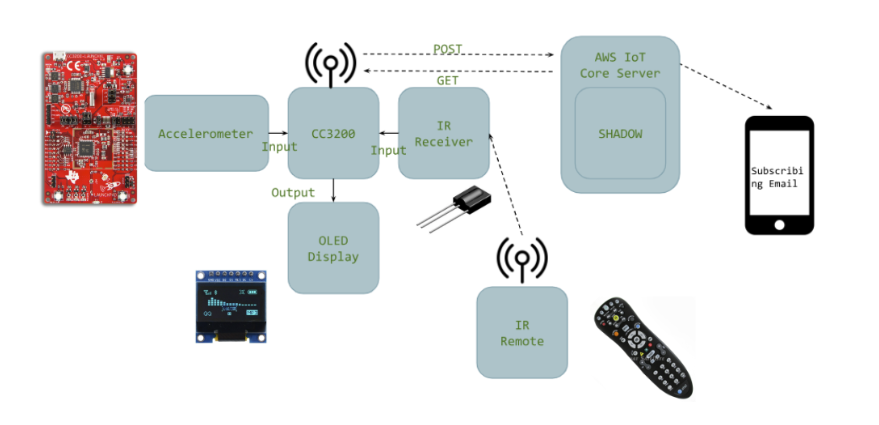
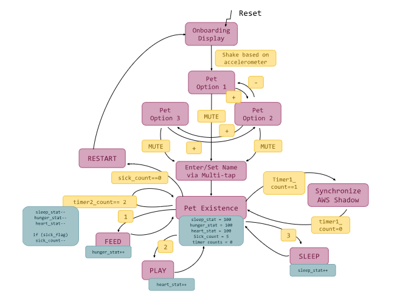

Our virtual pets allows the user to enjoy the companionship of a pet without the high-responsibility commitments
of a traditional pet. Unlike traditional tamagotchi pets, our pet allows the user to interact by shaking,
and sends real-time notifications to the user’s phone if the pet is hungry, lonely, or sleepy.
This project employs a TI CC3200 LaunchPad microcontroller as its core component. This will drive a 128x128 SPI RGB OLED to visually display the pet, its stats, and current state. The user input is captured via two sensors. The TI CC3200 has an onboard I2C accelerometer that will be used for motion cues. By using the IR transmitting TV remote and IR receiver, the player can customize and take care of their pet through basic actions such as feeding, playing, and putting it to sleep.
The AWS IoT Core is utilized to store the virtual pet’s state and automatically sends email notifications to the user’s phone for urgent cases of hunger, sadness, and sickness.
System Architecture

The hardware components used
SimpleLink CC3200 LaunchPad (CC3200-LaunchXL): A Texas Instruments microcontroller was used in this lab, including features like CPU, memory, and built-in peripherals. GPIO pins controlled devices like LEDs and switches, while the UART peripheral enabled communication between two devices.
Adafruit OLED Breakout Board: 1.5” color OLED that displays high-contrast 16-bit color. The visible portion of the OLED measures 1.5" diagonal and contains 128x128 RGB pixels, each one made of red, green and blue OLEDs. Each pixel can be set with 16-bits of resolution for a large range of colors. Compatible with 4-wire write only SPI protocol.
AT&T S10-S3 Remote: Universal remote control for a specific TV.
Vishay TSOP31336 IR Receiver Module: This 3-pin module receives incoming IR signals from AT&T S10-S3 Remote on the OUT pin.
A description of each state in the Virtual Pet State Machine Diagram is provided below:
Onboard State:
The system begins by displaying an egg and prompting the user to “shake to hatch.” The onboard I2C accelerometer continuously samples motion, and when a vigorous shake gesture is detected, the pet hatches and the user enters the Pet Option 1 state.
Pet Option 1 State:
Using the channel plus and minus buttons on the IR remote, the user navigates between three ASCII‐style pet faces on the OLED. Pressing MUTE confirms their choice and moves them into the Enter/Set Name via Multi-Tap state.
Enter/Set Name via Multi-Tap State:
The user enters a custom pet name using multi-tap text entry, which is shown on the OLED. Pressing MUTE finalizes the name and transitions to the Pet Existence state.
Pet Existence State:
The OLED displays the selected ASCII pet, its custom name, and three status bars—H (hunger), L (loneliness), and S (sleepiness). A periodic timer steadily decreases each stat and updates the bars accordingly.
Care States:
In the Existence state, the user can press:
Button 1 to feed (increases H)
Button 2 to play (increases L)
Button 3 to sleep (increases S)
After each action the corresponding stat is raised, the bars are redrawn, and the system returns to the Pet Existence state.
Sick State:
If any health statistic reaches 0, the pet becomes sick: a sick_count begins to decrease and a red exclamation mark is displayed on the OLED.
State Diagram

In this project I built a simple embedded-system demo using the CC3200 LaunchPad.
The demo reads sensor data, displays it on an OLED, and publishes updates to AWS IoT.
Below is a quick video (shot on my phone) showing it in action: